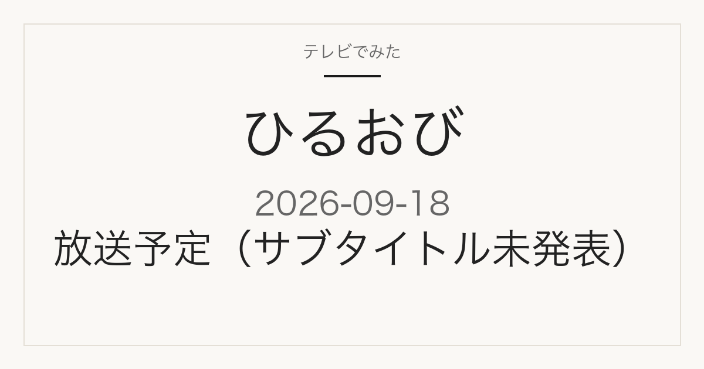

この記事には広告・アフィリエイトリンクが含まれる場合があります。
2026年9月18日（金）放送
ひるおび
9月18日（金）放送
サブタイトル・企画内容は番組表にまだ表示されていません
これは放送前の記事です。番組表で確認できた放送日時・放送局だけを載せています。この回のサブタイトルや企画内容は、2026年9月17日時点でまだ発表されていません。分かり次第、同じURLのこのページに追記します。
今分かっていることを見る
放送内容
現時点で確認できていること
サブタイトル未発表
TBSの番組表によると、2026年9月18日（金）はひるおびがあさ10時25分から11時55分まで放送されます（続く11時55分からの後半枠も同じひるおびです）。2026年9月17日時点で、番組表にこの回のサブタイトルや特集の企画名は表示されていません。
ひるおびは、TBS系列で平日あさ10時25分から放送されている帯の情報番組です。ニュース解説に加えて、グルメや暮らしに役立つ生活情報を紹介する企画が組まれる回が多く見られます。直近では、9月14日に「コスパ最強！都心の1000円以下定食！▼東京駅直結の新名所から中継」、9月16日に「1日5千円まんぞく旅！お芋テーマパーク▼安室奈美恵伝説をプレイバック」が放送されました（いずれもTBS番組表で確認）。
出典は2026年9月18日のTBS番組表 10時25分枠（2026年9月17日確認）です。この回のサブタイトル・企画内容は、確認した時点では番組表に記載がありませんでした。
見たあとに
紹介された店・商品は、このページで確認できます
このページは同じURLのまま更新します。放送当日の朝にサブタイトルが判明した時点で、この記事に追記します。放送で紹介された店・商品も、確認できたものから同じページに追記していくので、放送後すぐここで確認できます。
載せるのは、番組公式か店舗・メーカーの公式情報で確認できたものだけです。SNSの投稿だけを根拠にした断定はしません。
出典
2026年9月18日 TBS番組表の10時25分枠
当サイトは番組公式サイトではありません。放送内容は変更になる場合があります。